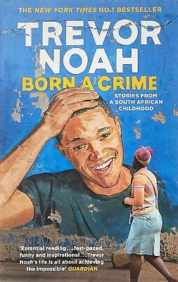
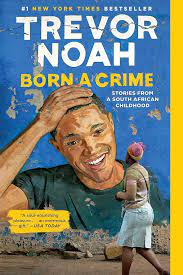
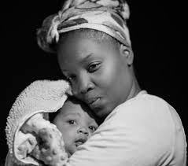

This book talks about Trevor's early life as a coloured person in south Africa during apartheid. In
the book
Tevor talks about this early childhood life and how he had to grow upp differently from other
children
because of his skin color .He speaks alot about his mother who was always present in his life
he talks about all his first expiriences, love, crime and heartbreak. Its a journey of self discovery with a mix of humour.


She displays the purest form of love that can only be found in a mother.
A submissive woman in this day and age has become a thing of the past. Women don't bow down to greet their husbands when they come home; they go to offices and work just as hard as men do, and even outshine them. Women have broken barriers that existed in the past, they are leaders, Engineers, Doctors, and Lawyers. Women have fought for the independence they have gained over time it is no longer dominated by men. But, society has placed women in predefined boxes; if these expectations go unchecked, a woman has officially failed in life. This biased way of living is backward and has been passed by time. While women no longer worship their husbands or submit to their every wish, the modern way of thinking is just as degrading as it was in the past, only in a different time and way. Even though women have made milestones in society, they still lose to men, it is never a race of equals, one always has an upper hand. We see these instances in different things that are not spoken about, like when a woman is not married or having a child at a certain age, society silently judges them, declaring them as failures, regardless of their successes or accomplishments. This would not be the case if the roles were to be reversed and a man were the one to do the same. As much as things have changed and women have more going on for them, it is fair to say men still have the upper hand, even in workplaces, for instance where women find they have to work twice as hard as men only to achieve less pay compared to men. Women have proven to be more competent than men, yet the odds are still stacked against them.